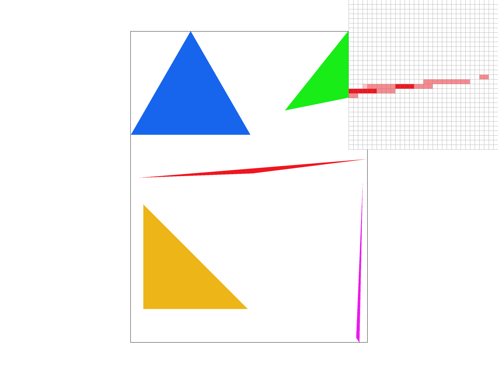

Overview
In this project, We implemented a rasterizer to render SVGs as PNG images. We started with drawing single color triangles using line tests to determine which pixels were inside the triangles. We then implemented supersampling using subpixel samples to antialias the triangle edges. Next, We added support for transformations like translation, scaling, and rotation to manipulate the triangle positions. To enable coloring, We implemented barycentric interpolation to smoothly interpolate colors across triangles based on the vertex colors. For texturing, We mapped texture coordinates to triangle vertices and sampled the texture image using nearest neighbor and bilinear filtering. Finally, We implemented mipmapping and trilinear level sampling to select appropriate mip levels during texturing to optimize rendering. Overall, We learned how rasterization and sampling techniques are used to render vector graphics, the tradeoffs between performance and quality, and how concepts like antialiasing and texture filtering have very simple fundamentals but produce powerful results when applied effectively.
Section I: Rasterization
We rasterize triangles using a line test at each pixel to determine whether the pixel center lies inside the triangle. My algorithm checks only the bounding box around each triangle to avoid checking every pixel. The bounding box is decided by the minimum and maximum of x axis and y axis according to the three points. And also we defined the x_min is [ minimum of x axis]-1 and the x_max is [ maximum of x axis]+1 to get a complete bounding box. The same process is also applied to the y_min and the y_max. It works correctly regardless of vertex order by checking that all three line test results have the same sign. On triangle edges, the pixel is considered inside to avoid missing any edges..
Part 1: Rasterizing single-color triangles
|
|
|
|
|
|
Part 2: Antialiasing triangles
We implemented supersampling using a sample grid of sqrt(sample_rate) x sqrt(sample_rate) per pixel. Supersampling renders at a higher resolution and averages down samples to compute pixel colors. This allows partially covered edge pixels to be properly antialiased based on subpixel triangle coverage instead of strictly binary inside/outside tests. Therefore, we can analyze the comparatively exact color percentage and weight of previous pixels, which is especially useful while processing pixels in edges. And the degree of the accuracy and smoothness of color increases with the number of sub-pixels. And in this part, instead of enlarging the size of image and sample_buffer, we choose a way using less memory. For every previous pixel, we count the number of sub-pixels and calculate the weighted color which largely decreases the requirement of memory, especially when the size of the bounding box is large. The results below illustrate smoother edges from increased sampling. The corner shows fewer jagged artifacts as more subpixel triangles emerge. This approximates continuous edges better via sampling.
|
|

|
|
|
|
Part 3: Transforms
We implemented translation, scaling and rotation transforms by multiplying the vertex positions by the appropriate transform matrices. This enables manipulation of triangle positions and orientation.
Below are the original cubeman with Our altered cubeman touching his head:
|
|
|
We used only one rectangle to represent each part of the body so that it looks minimalism. We made his arm move by applying translation and rotation transforms to his arm vertices over time. We rotated his head a little bit and apply a translation to move it to the left and down. We changed his colors to blue and yellow, so that it feels shiny.
Section II: Sampling
Part 4: Barycentric coordinates
Barycentric coordinates represent positions inside triangles as weighted combinations of the vertices. We used these weights to smoothly interpolate colors across triangles. As shown below, We mapped red, pink, and blue colors to vertices of a triangle. Barycentric interpolation blends them smoothly based on proximity to vertices.
|
|
|
Part 5: "Pixel sampling" for texture mapping
In computer graphics, texture mapping is a crucial technique for adding detail and realism to rendered objects. One key aspect of texture mapping is how the texture image is sampled at the fragment positions. In simpler terms, when we apply a texture to an object in a 3D scene, we need to decide which part of the texture corresponds to each point on the object's surface. This process is called texture mapping. Initially, the most straightforward method is nearest sampling, where the color of the single closest texel (texture pixel) is used for each fragment. While this method is simple, it often leads to visible discontinuities across pixels, especially when the texture is magnified or minified. To address this issue, bilinear sampling was introduced. Bilinear sampling takes into account the four closest texels to the fragment position and blends their colors using proximity weights. This averaging process smooths out the transitions between texels, resulting in substantially improved texture continuity compared to nearest sampling. In essence, bilinear sampling enhances the visual quality of textured objects by reducing pixelation and jagged edges, providing a more natural and visually appealing appearance.
For texturing, We mapped texture coordinates to vertices and sampled the texture image at fragment positions. Using nearest sampling takes the color of the single closest texel. This works but causes discontinuities across pixels. Bilinear sampling averages the four closest texels using proximity weights, smoothing out discontinuities. The results below illustrate substantially improved texture continuity with bilinear sampling.
|
|
|
|
|
|
|
|
|
|
|
|
Part 6: "Level sampling" with mipmaps for texture mapping
To enable level-of-detail, We implemented mipmapping and trilinear sampling. The mipmap holds downsampled versions of the full-res texture to approximate lower detail at lower resolution. We compute the ideal mip level at each pixel based on texture footprint and lerp between two mip levels and two pixel samples. Trilinear filtering trades speed for higher visual quality compared to single level methods. The images below compare combinations of level 0, nearest level and bilinear level sampling with nearest and bilinear pixel sampling.
|
|
In our texture mapping implementation, we evaluated different sampling techniques based on speed, memory usage, and antialiasing power. Here's a detailed comparison:
Speed
- Using 1 pixel per sample is the fastest, as it requires the least number of computations.
- Nearest neighbor pixel sampling (P_NEAREST) is faster than bilinear pixel sampling (P_LINEAR) due to simpler calculations.
- In level sampling, nearest (L_NEAREST) and level-0 (L_ZERO) have similar speeds, with the only difference being the level calculation in L_NEAREST.
- Bilinear level sampling (L_LINEAR) is the slowest among the three, as it combines two nearest level sampling results.
Memory Usage
- The memory requirement increases linearly with the number of samples per pixel due to the need for a larger buffer.
- Bilinear and nearest pixel sampling have similar memory usage, as they primarily involve averaging pixel values.
- The memory usage for bilinear, nearest, and level-0 level sampling is also similar. However, storing more levels for L_NEAREST and L_LINEAR requires approximately 4/3 times the memory needed for L_ZERO.
Antialiasing Power
- The best antialiasing is achieved with 16 samples per pixel, bilinear level sampling (L_LINEAR), and bilinear pixel sampling (P_LINEAR).
- Antialiasing power decreases in the following order: 16x supersampling > 9x > 1x, L_LINEAR > L_NEAREST > L_ZERO, and P_LINEAR > P_NEAREST.
- If the image is consistently on the boundary of a particular level, L_LINEAR performs similarly to L_NEAREST as only one level is sampled.
Summary Table
| Aspect | Technique | Speed | Memory Usage | Antialiasing Power |
|---|---|---|---|---|
| Pixel Sampling | P_NEAREST | Fast | Low | Low |
| Pixel Sampling | P_LINEAR | Slower | Low | Medium |
| Level Sampling | L_ZERO | Fast | Low | Low |
| Level Sampling | L_NEAREST | Fast | Medium | Medium |
| Level Sampling | L_LINEAR | Slowest | Medium | High |
| Supersampling | 1x | Fastest | Lowest | Lowest |
| Supersampling | 9x | Slower | Higher | Medium |
| Supersampling | 16x | Slowest | Highest | Highest |
Our implementation
For level sampling implementation, We applied the formula provided in the slides and the project specification to determine the correct mipmap level to access. Then, We adjusted the uv texture coordinates to match the resolution of that level and retrieved the texture sample from that mipmap level. The technique using non-zero mipmap levels results in increased blurring, but it offers a slight speed advantage. Below are some examples of the output combinations.
My own picture, a cute dog.
|
|
|
|
|
|
|
|
|
It is evident that zero-level, nearest sampling yields the poorest results, while level bilinear and bilinear sampling offer the best performance.